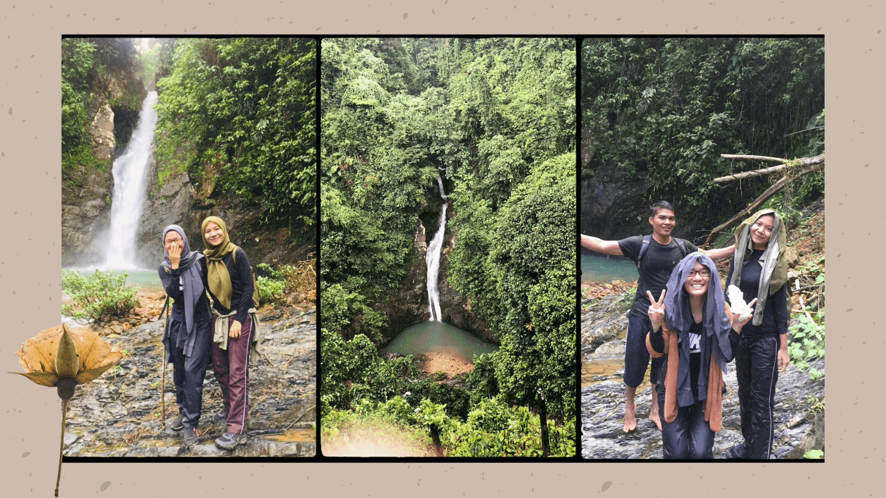
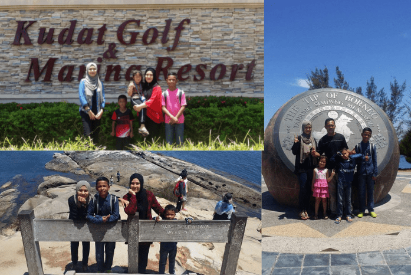
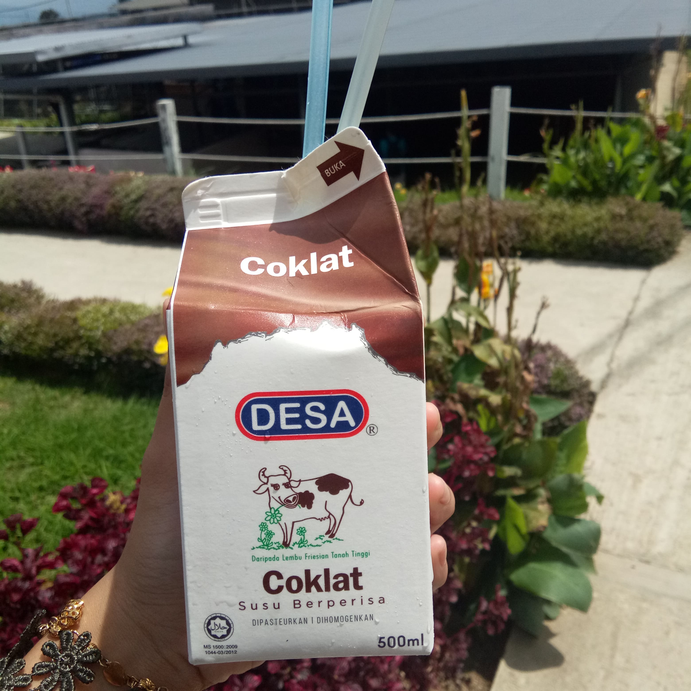

MY EXPERIENCED
Bongol Hill
Bongol Hill, Kudat
There are many experiences that I will never forget when I was in Sabah. To this day, I cannot forget that meaningful experience, which combined me with the beauty of God’s creation. One of the first experiences that excited me was when I was able to climb hills in Sabah. Among the hills that I have climbed is Bongol hill in the Kota Belud district. distance from my house while it took 2 hours to get there. The climbing time is estimated in an hour depending on one's speed. It was an exciting experience for me, just arrived at the top, me and a friend dancing while being recorded by my boy bestfriend.

Murug Turug Eco Tourism
Apart from that, I also have experience in exploring the most beautiful waterfalls in Sabah, that become a tourist attraction. The waterfall is located in Tamparuli, or better known as Murug Turug Eco tourism. To enter Murug Turug eco Torism, they charge RM20 for each person. If you want cheap, take the group package. Murug Turug is an experience that I will never forget to this day. In Murug Turug there are 7 waterfalls, but my friends and I only took the package for one waterfall only. Visitors can also camp next to the waterfall accompanied by a tour guide. Cars are also available if visitors want to use the car service, charges are also levied for each passenger. Truly the most wonderful experience for me and friends. If given a chance I want to go there again.!

Tip of Borneo
Kudat Hotel
I also had the opportunity to go to the tips of borneo. This dramatic headland is situated in the northern-most tip of BORNEO, the third largest island in the world, after Greenland and New Guinea. It is located in the Kudat Peninsular, about three and a half hours (or 215 kilometers) drive from Kota Kinabalu City.
Simpang Mengayau means ‘lingering junction’ as it is here that the South China Sea lingers and meets the Sulu Seas flowing from the east. The sunsets and full moons are just beautiful. The Pulau Kalampunian lighthouse is a reminder of treacherous coastline and past shipwrecks. On the left is the beautiful beach of Pantai Kalampunian with white long sandy beach and mesmerizing azure blue water.
Labuan
I also had the opportunity to go to the federal territory of Labuan which is located next to Sabah, Labuan is one of the smallest and has a tourist attraction. Tourists will usually buy chocolate because chocolate here is the same as tax -free langkawi. The beach here is very beautiful and exciting.
to get there we have to take a speed boat. Charged RM8 per head. charges are relatively cheap for a speed boat ride. Our first day to Labuan we boarded a speedboat, and parked our car in the parking lot provided. Before we go to Labuan we have to buy tickets at Menumbok Jetty
After we enjoyed our holiday, we returned to Kota Kinabalu by ferry to Menumbok jetty which took 2, 3 hours to reach the destination. Unlike the Speedboat we rode on the first day which took about 20 minutes only. The ferry can carry more than 10 cars, and the ferry is equipped with various toilet facilities, a canteen to buy food, tv and comfortable seating. But visitors are more interested in eating and relaxing on the ferry porch while enjoying the beauty of the sunset.

Chocolate milk
There were many exciting experiences for me during my stay in Sabah that I cannot forget to this day. I also really miss the memories I built there, and also the beauty of Mount Kinabalu which is a tourist attraction, I have been to Kundasang Town more than three times to enjoy the beauty there, we also had the opportunity to taste fresh milk. Favorite milk is chocolate, very tasty !! the combination of her taste is so perfect not the same as the chocolate milk out there, for those who haven’t tried it, you should go there and taste it for yourself.
I am so excited to share my experience with you. There are many more of my experiences in Sabah and Sarawak that I cannot share with you all, because I am short of time. If given the chance I will share more interesting experiences with you. Bye hopefully we meet again in the next episode.